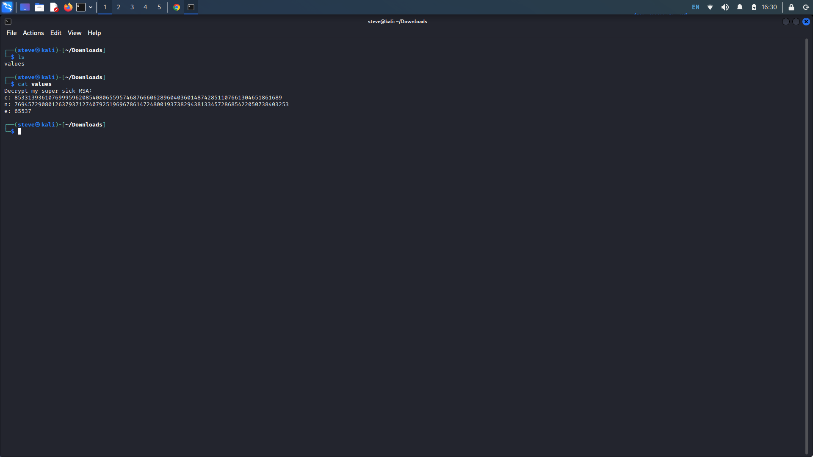

Mind your P's and Q's
Description: In RSA, a small e value can be problematic, but what about N? Can you decrypt
this? values
Writeup: We are told to decrypt the RSA given values, c, n, and e. The RSA alogrithm uses
a public and private key, making it an asymmetric cryptographic algorithm.

RSA Encryption:
- Choose two large distinct prime numbers p and q
- Calculate n = p * q (n is called the modulus)
- Calculate oiler's totient φ(n), where φ(n) = (p - 1) * (q - 1)
- Select a public exponent e, such that e is co-prime and 1 < e < φ(n)
- The public key is (n,e)
- Calculate the private exponent, d, which is the modular multiplicative inverse of e modulo φ(n). (d is the value that satisfies the equation: (d * e) mod φ(n) = 1)
- Use private key (d, n)
- Compute the plaintext message by applying the decryption formula: plaintext = (c^d) mod n
RSADECRYPT.PY:
class ModularInverseError(Exception):
pass
def extended_gcd(a, b):
"""
extended Euclidean Algorithm to find the greatest common divisor (gcd) of two numbers a and b,
along with the coefficients x and y that satisfy the equation ax + by = gcd(a, b).
"""
if a == 0:
return b, 0, 1
else:
g, y, x = extended_gcd(b % a, a)
return g, x - (b // a) * y, y
def modular_inverse(a, m):
"""
computes the modular inverse of a modulo m using the Extended Euclidean Algorithm.
"""
g, x, y = extended_gcd(a, m)
if g != 1:
raise ModularInverseError("Modular inverse does not exist")
else:
return x % m
def square_and_multiply(base, exponent, modulus):
"""
performs modular exponentiation using the square-and-multiply algorithm.
"""
result = 1
base = base % modulus
while exponent > 0:
if exponent % 2 == 1:
result = (result * base) % modulus
exponent = exponent // 2
base = (base * base) % modulus
return result
# prompt the user to enter the values
p = int(input("Enter the value of p: "))
q = int(input("Enter the value of q: "))
e = int(input("Enter the value of e: "))
ciphertext = int(input("Enter the value of the ciphertext c: "))
# calculate necessary values
n = p * q
totient = (p - 1) * (q - 1)
d = modular_inverse(e, totient)
# decrypt the ciphertext
plaintext = square_and_multiply(ciphertext, d, n)
# convert the decrypted plaintext to the original message
message = bytearray.fromhex(hex(plaintext)[2:]).decode()
# print the decrypted message
print("Decrypted message:", message)